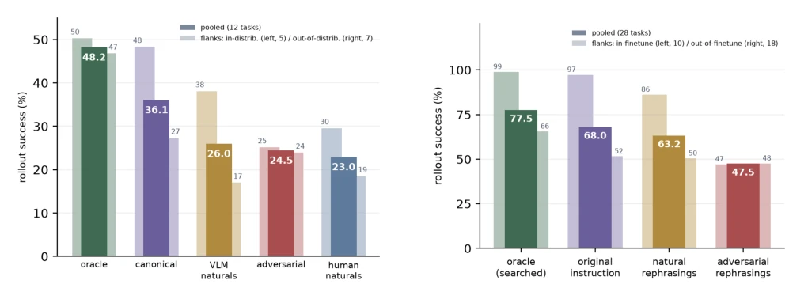
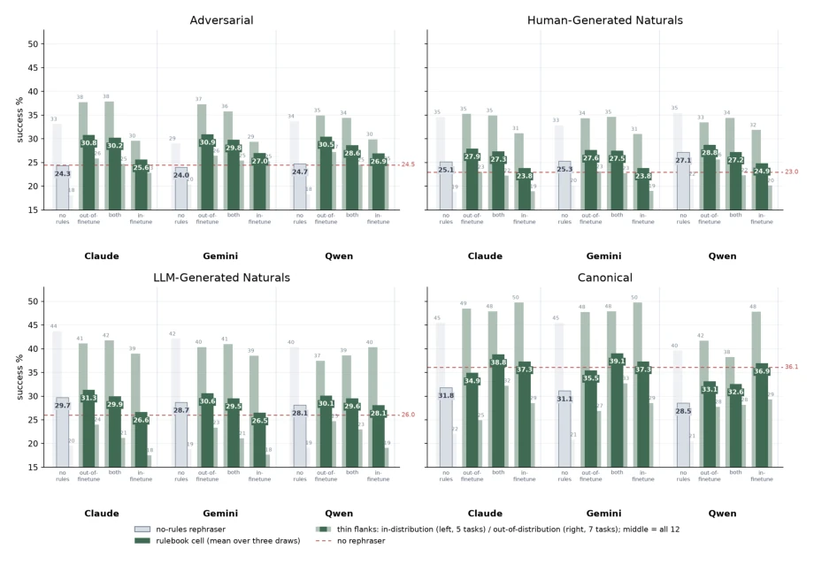
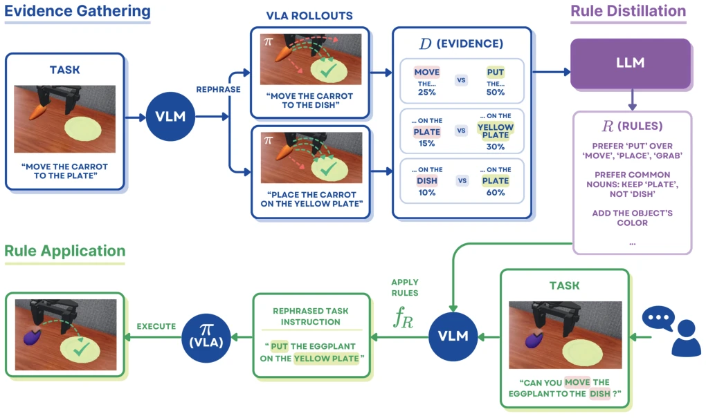
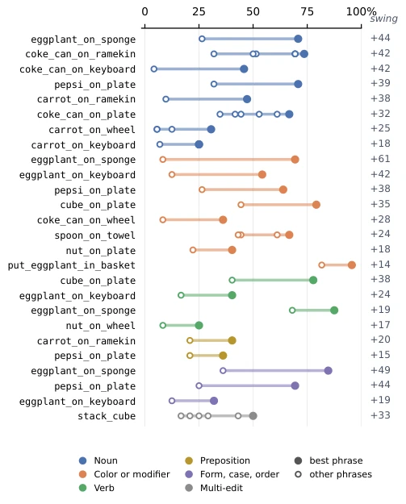
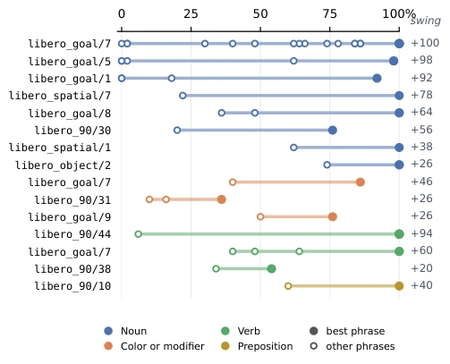

VLA models behave like picky children; changing a word in the instruction can drop success rates by dozens of points. π0, despite undergoing paraphrasing augmentation, still failed due to terms like "stove" and "hotplate". Instead of modifying model weights, the authors devised a "language rulebook," distilling training-time performance into several natural language rules, which rewrite instructions before feeding them to the model at deployment. While this approach is essentially a patch, it excels in not requiring retraining and enabling zero-shot transfer. However, if the rule library fails to cover certain edge cases, the model will still fail, as it has not learned true semantic understanding but merely the role of a "translator." This constitutes a clever hack that addresses symptoms rather than the root cause, yet it demonstrates that language sensitivity is systemic.
General robots require users to command via natural language, yet VLA models are extremely sensitive to instruction phrasing. Existing approaches, such as training-time paraphrasing augmentation [1], [2], fail to fully eliminate sensitivity, with π0 still exhibiting 61-point fluctuations after fine-tuning. Test-time verification [1], [4] increases inference costs, while instruction optimization [5]-[7] requires online interaction and lacks transferability. This paper aims to address language sensitivity under frozen policies without modifying weights and enabling zero-shot transfer to unseen tasks. This fills the gap in existing methods regarding the inability to improve generalization capabilities at low cost on the deployment side, offering a new perspective for deploying frozen policies.

Fig. 6: Success of the rephrase-augmented π0 on the 12 sealed Bridge tasks by phrasing condition, over 24 fixed layouts. Solid bars pool all tasks; thin flanks are the in-distribution (left, 5 tasks) and out-of-distribution (right, 7) strata. Repetitions per layout: oracle and canonical 12, adversarial 2, naturals 1. Oracle phrasing shrinks the 21-point strata gap to 3 points.

Fig. 8: Main results: success of the rephrase-augmented π0 on the 12 sealed SIMPLER tasks, one panel per phrase set and one bar group per applier. Dashed red = no-rephraser baseline; grey = no-rules rephraser; greens = the out-of-finetune, both, and in-finetune rulebooks, each the mean over three draws; thin flanks = in-distribution (left, 5 tasks) and out-of-distribution (right, 7) strata. Out-of-finetune rulebooks are strongest on every non-canonical set, with gains concentrated out-of-distribution; the canonical panel, with one phrase per task, is statistically underpowered and should be read with caution.
The workflow consists of three steps: evidence collection, rule distillation, and rule application. First, a VLM generates multiple phrasings for training tasks, which are rolled out and scored on a frozen VLA, accumulating 5,453 task-phrase pairs. Second, an LLM distills this evidence into 10-20 explicit rules (e.g., "maintain 'plate' rather than 'dish'"). Finally, during deployment, the applicator rewrites each new instruction according to the rules, invoking the process only once before passing it to the unchanged VLA. The core innovation lies in modeling sensitivity as interpretable rules rather than black-box fine-tuning. The rule library is generated in the offline phase; at deployment, only a single rewrite occurs, adding no per-step inference overhead, and rules can transfer across tasks.

Fig. 1: Method overview. Evidence gathering: a VLM rephrases each training task, and the frozen VLA’s rollout success on each phrasing forms the evidence D. Rule distillation: an LLM distills D, once and offline, into 10–20 explicit phrasing rules R. Rule application: at deployment a VLM conditioned on R rewrites each incoming instruction once (fR) before passing it to the unchanged VLA. The phrasings, scores, and rules shown are illustrative only.
Evaluated on SIMPLER Bridge and LIBERO. Baselines include no paraphrase, no rule paraphrase, and CoVer [1]. The metric is success rate. Results show that the no-fine-tuning rule library achieved a relative improvement of 16-27% on both adversarial and natural instructions, primarily concentrated on out-of-distribution tasks. In the LIBERO reproduction, success rate on fine-tuned tasks improved from 93.6% to 97.8%. CoVer performed worse than this method. Ablation studies demonstrate the stability of rule distillation. This proves that language sensitivity is systemic, can be mitigated through rules, and requires no additional training costs.
其他图片Other Figures

Fig. 4: Single-edit swings for π0 on SIMPLER Bridge: 26 significant sets over 16 tasks, the largest per task and edit category. Each row is one set whose phrases differ by one edit; dots are success rates over n = 72 rollouts (basket task n = 180), the filled dot is the best phrasing, and the right column is the swing in points. Every set has p ă 0.05 under a two-proportion z test.

Fig. 5: Single-edit swings for π0.5 on LIBERO, formatted as Fig. 4: 15 sets over 13 tasks, n = 50 per phrase, with eight further significant sets removed as scene-ambiguous. Swings reach 100 pp, as “fire up the stove” succeeds 100% of the time and “turn on the stove” 6%.